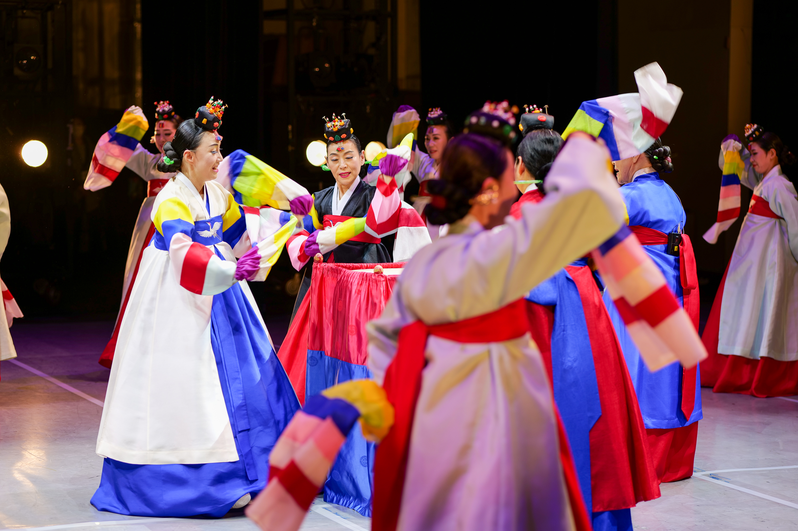

-
국가무형유산 승전무 보존회
- 전통을 이어가는 승전무, 미래를 향한 문화유산
1966년부터 이어온 50년 전통의 국가무형유산
승전무를 보존하고 전승합니다
-
통영 승전무
-
(統營 勝戰舞)
- 통영에서 전승되어 온 궁중무고형(宮中舞鼓型)의 북춤
1968년 중요무형문화재(현, 중요무형유산)로 지정되었다.
창사(唱詞) 내용의 일부에 이순신(李舜臣)의 충의와
덕망을 추앙한 부분이 있어 승전무라고 한다.

統營 勝戰舞
북춤(劍舞)
고려 충렬왕때의 무고(舞鼓)로 시작되어 이조말엽까지
궁중무고형(宮中舞鼓型)으로 내려오면서
궁중무고형의 정수와 전통을 이어받아
이충무공께서 임진란때 병선위나 진지에서 장졸들의
사기를 돋우고 위로하기 위해 추게했으며,
임진란 싸움을 이긴 뒤 전승축하, 통제관 관하
각종 의식하례(儀式賀禮), 충무공사당 향사(享祀)에 헌무(獻舞)했다.

統營 勝戰舞
칼춤(劍舞)
신라시대에 동자들이 가면을 쓰고 양손에 칼을 들고
추던 춤이었는데 조선시대에 기녀무로 변모되었으며
17세기 말엽에는 궁중으로 유입되어 궁중무로 연희되어 왔다.
임진왜란때 삼도수군 통제영 산하의 취고수청, 교방청, 악공조합등에서
양성되어 장졸들의 사기양양을 위해 병선위와 진지에서 추어졌다.